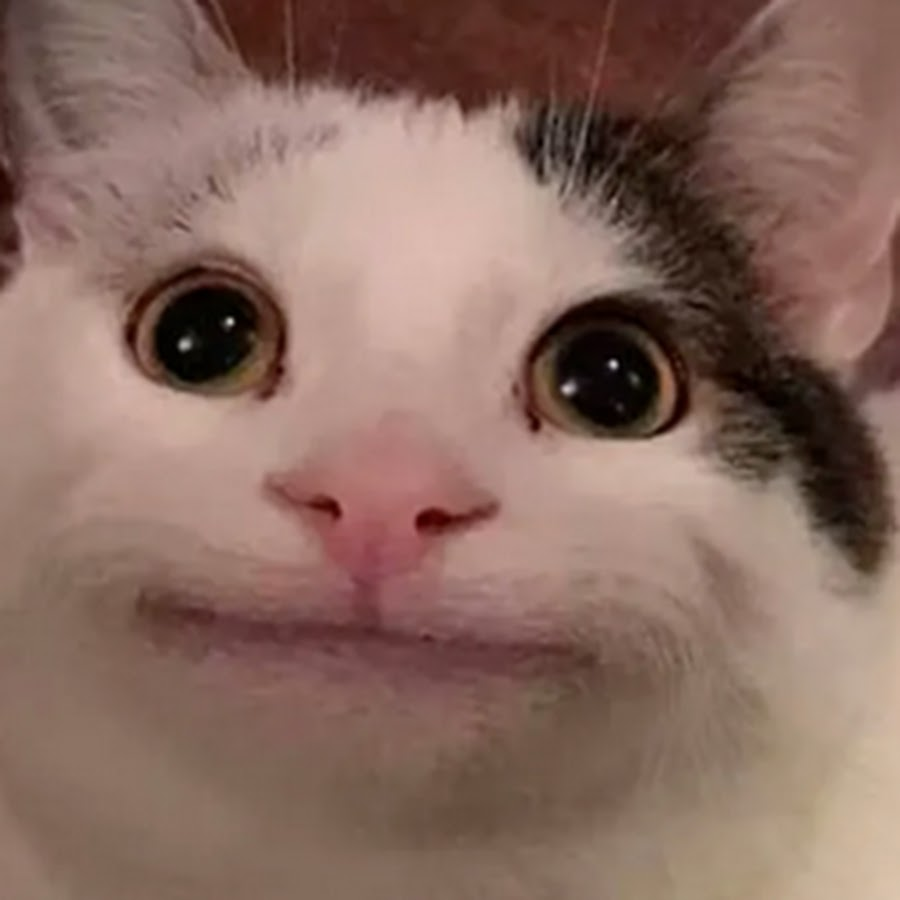
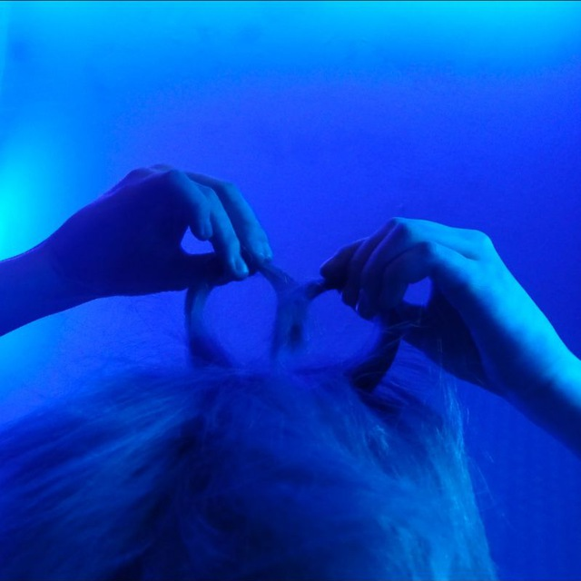
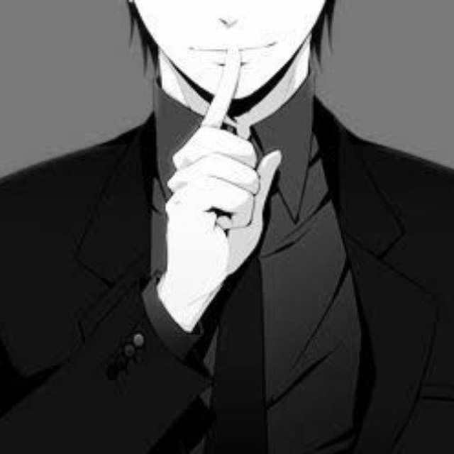
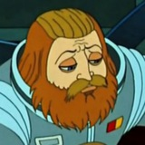

Чат Minecraft
Приветствуем вас в нашем дружном чате по Minecraft.
Основное
Администрация:
-

Лeонид, Гл. Администратор чата, и тот кто програмировал этот сайт.....
-

Glazik, Владелец чата
-

Ст. модератор
-

Yuri, он не являеться админом, но большой респект ему, за то что подсказывал с возникшими вопросами при кодировании сайта.
Дополнене:
Снятие варна — от 2 единиц репутации. (зависит от тяжести варна)
Снятие мута — от 5 единиц репутации. (зависит от тяжести мута)
Снятие бана — от 12 единиц репутации. (зависит от тяжести бана)
Снятие чс — от 15 единиц репутации. (зависит от тяжести чс)
Покупка статус VIP на месяц - 10 звёзд.
Закреп вашего сервера на 1 день - 5 звёзд
10 репутации - 5 звёзд
꧁꧂꧁꧂꧁꧂꧁꧂꧁꧂